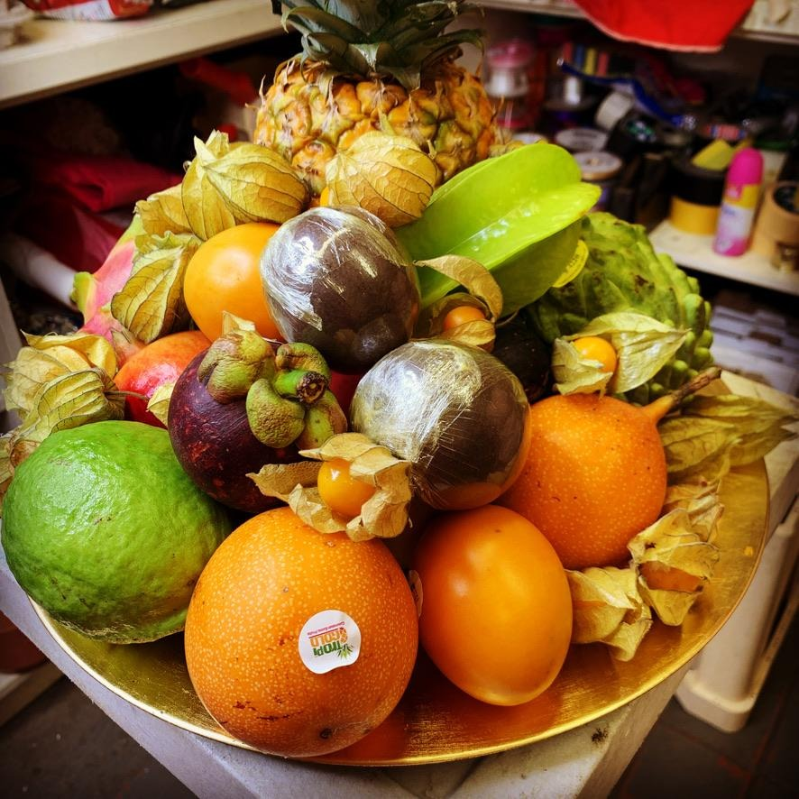

Bridging Botanicals with Natural Nutrition
Our story began at Unit 53 Barking Industrial Park, where we set out with a simple, powerful vision: to revolutionize premium fruit delivery in the UK by pairing the absolute finest global fruits with fresh floristry.
We realized that traditional gifting was dominated by plastics, chemical preservatives, or fleeting items. We wanted to introduce a healthier, premium alternative—curated gift baskets representing year-round health, physical wellness, and aesthetic beauty.
By establishing tight relationships with sustainable orchards (sourcing products like Segundo Frutas mangoes, fresh starfruit, and granadilla) and pairing them with seasonal flower arrangements, we built a brand that represents a premium lifestyle.
"A gift from Food Flower Market doesn't just sit on a counter; it inspires wellness, nourishes the body, and fills the home with the natural beauty of hand-selected blossoms."
Today, our temperature-controlled delivery network operates year-round, ensuring that our boxes arrive at their destination at peak ripeness, ready to be enjoyed.

The Wellness Value of Exotic Fruit Gifting
Why choose an exotic fruit subscription? We look beyond aesthetic value to explain the health advantages.
Immune & Defense Support
Exotic varieties such as physalis (cape gooseberry) and fresh mangosteen are loaded with bioflavonoids and essential vitamins to reinforce your immune system naturally.
Cardiovascular Health
Granadillas and passionfruits are rich in dietary fiber and essential potassium, promoting heart wellness and regulating natural blood pressure levels.
Radiant Skin & Vitality
Mangoes and carambola starfruits contain high volumes of Vitamin A and natural antioxidants, fighting oxidative stress and promoting clear, hydrated skin.
The Team Behind The Magic
Meet the curation and logistics experts based at our Barking headquarters who assemble your premium fruit delivery orders.

Amara K.
Founder & Chief Curator
Hale M.
Master Floral Designer
Devon S.
Head of Gifting LogisticsElevate Your Gift-Giving Today
Whether for family, close friends, or VIP business clients, our curated gift baskets deliver real health benefits and luxurious style.